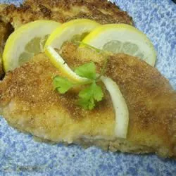

Schnitzel

Description
An authentic German recipe. You may use tenderized veal in place of the cube steaks for this recipe.
Ingredients
- 1 cup self-rising flour
- 1 cup self-rising cornmeal
- 1 teaspoon salt
- 1 teaspoon pepper
- 1 cup milk
- 3 eggs
- 1/4 cup vegetable oil
- 4 (4 ounce) beef cube steaks
- 2 teaspoons lemon juice, or to taste (Optional)
Steps
- In a shallow bowl, stir together the flour, cornmeal, salt and pepper. In a separate shallow bowl, whisk together the milk and eggs using a fork.
- Heat oil in a large skillet over medium-high heat. The oil should completely cover the bottom of the skillet. While the oil heats, dip cube steaks into the egg and milk, then dip into the flour mixture, and shake off the excess. Place in the hot skillet.
- Fry steaks on each side until golden brown, then reduce the heat to medium and cook until well done. Do not cover. Drizzle with lemon juice before serving.